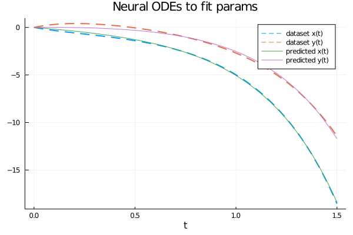
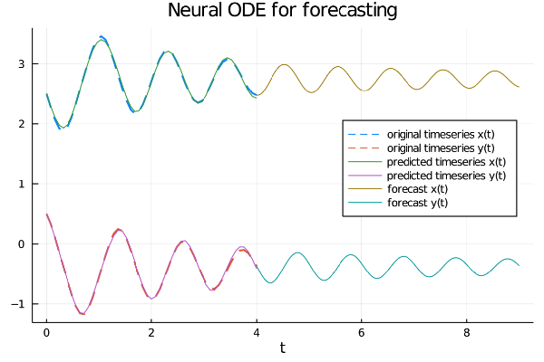

Esperimenti con Neural ODEs in Julia
Neural Ordinary Differential Equations (abbreviato Neural ODEs) è un paper che introduce una nuova famiglia di reti neurali
in cui alcuni strati nascosti (o anche l'unico strato nei casi più semplici) sono implementati con un risolutore di equazioni differenziali ordinarie.
Questo post mostra due esempi scritti in Julia (in futuro ce ne saranno altri) che utilizzano alcune idee descritte nel paper Neural ODEs per mostrare possibili soluzioni nei seguenti scenari:
- Esperimento #1: addestrare un sistema di ODE per soddisfare un obiettivo.
- Esperimento #2: calcolare il forecast di un sistema di serie temporali descritte da una legge differenziale.
- $t$ è la variabile indipendente
- $x$ è la funzione incognita
- $y$ è la seconda funzione incognita
- $x$ e $y$ sono da intendersi funzioni di $t$, quindi $x=x(t)$ e $y=y(t)$, ma l'uso di questa notazione compatta, oltre ad avere una maggiore leggibilità a livello matematico rende più agevole la "traduzione" in codice dell'equazione
- $x'$ è la derivata prima di x rispetto a $t$ e naturalmente $y'$ è la derivata prima di y rispetto a $t$
- Un dataset che contenga gli input e gli output.
- Una legge che associ input e output in forma di sistema parametrico di equazioni differenziali.
- Determinare opportuni valori dei parametri affiché il sistema ottenuto sostituendo i parametri formali con i valori determinati approssimi al meglio la mappatura tra input e output.
Tutti i vari frammenti di codice descritti in questo post richiedono la versione 1.5.3 di Julia e i seguenti package: DifferentialEquations, Flux, DiffEqFlux, Plots.
Per ottenere il codice si veda il paragrafo Download del codice completo in fondo a questo post.
Se si fosse interessati a vedere la soluzione degli stessi problemi in Python con TensorFlow si veda il post Esperimenti con Neural ODEs in Python con TensorFlowDiffEq su questo sito web.
Convenzioni
In questo post le convenzioni adoperate sono le seguenti:
Esperimento #1: addestrare un sistema di ODE per soddisfare un obiettivo
Un percettrone multistrato (abbreviato MLP) è uno strumento opportuno per imparare una relazione non lineare tra input e output di cui non si conosce la legge.
Ci sono casi invece in cui si ha conoscenza a priori della legge che correla gli input e gli output, ad esempio nella forma di un sistema parametrico di equazioni differenziali:
in questa situazione una rete neurale di tipo MLP non consente di utilizzare tale conoscenza mentre una rete di tipo Neural ODEs sì.
Lo scenario di applicazione
Lo scenario di applicazione è il seguente:
In questo post la legge non è volutamente una legge famosa, ma è il sistema parametrico di due equazioni del primo ordine e otto parametri mostrato nel seguente paragrafo.
Il problema da risolvere
Sia dato il seguente sistema parametrico di due equazioni differenziali ordinarie con valori iniziali
che rappresenta la legge che descrive il comportamento di un ipotetico sistema dinamico:
$$ \begin{equation}
\begin{cases}
x' = a_1x + b_1y + c_1e^{-d_1t}
\\
y'= a_2x + b_2y + c_2e^{-d_2t}
\\
x(0)=0
\\
y(0)=0
\end{cases}
\end{equation} $$
Ovviamente questa è una demo il cui scopo è provare la bontà del metodo, quindi per preparare il dataset
si fissino arbitrariamente gli otto valori dei parametri, ad esempio questi:
$$ \left[\begin{matrix}a_1 \\ b_1 \\ c_1 \\ d_1 \\ a_2 \\ b_2 \\ c_2 \\ d_2 \end{matrix} \right] =
\left[\begin{matrix}1.11 \\ 2.43 \\ -3.66 \\ 1.37 \\ 2.89 \\ -1.97 \\ 4.58 \\ 2.86 \end{matrix} \right] $$
e sapendo che con tali valori dei parametri la soluzione analitica è la seguente:
$$ \begin{equation}
\begin{array}{l}
x(t) = \\
\;\; -1.38778 \cdot 10^{-17} \; e^{-8.99002 t} - \\
\;\; 2.77556 \cdot 10^{-17} \; e^{-7.50002 t} + \\
\;\; 3.28757 \; e^{-3.49501 t} - \\
\;\; 3.18949 \; e^{-2.86 t} + \\
\;\; 0.258028 \; e^{-1.37 t} - \\
\;\; 0.356108 \; e^{2.63501 t} + \\
\;\; 4.44089 \cdot 10^{-16} \; e^{3.27002 t} + \\
\;\; 1.11022 \cdot 10^{-16} \; e^{4.76002 t} \\
\\
y(t) = \\
\;\; -6.23016 \; e^{-3.49501 t} + \\
\;\; 5.21081 \; e^{-2.86 t} + \\
\;\; 1.24284 \; e^{-1.37 t} - \\
\;\; 0.223485 \; e^{2.63501 t} + \\
\;\; 2.77556 \cdot 10^{-17} \; e^{4.76002 t} \\
\end{array}
\end{equation} $$
(verificabile online tramite Wolfram Alpha)
si è in grado di preparare il dataset: l'input è un intervallo discretizzato del tempo da $0$ a $1.5$ passo $0.01$,
mentre l'output è costituito dalle soluzioni analitiche $x=x(t)$ e $y=y(t)$ per ogni $t$ appartenente all'input.
Una volta preparato il dataset ci si dimentichi dei valori dei parametri e della soluzione analitica e ci si pone il problema
di come addestrare una rete neurale per determinare un opportuno set di valori per gli otto parametri per approssimare al meglio
la mappatura non lineare tra input e output del dataset.
L'implementazione della soluzione
Il sistema parametrico di equazioni differenziali è già scritto in forma esplicita e in Julia con DifferentialEquations si implementa così:
function parametric_ode_system!(du,u,p,t)
x, y = u
a1, b1, c1, d1, a2, b2, c2, d2 = p
du[1] = dx = a1*x + b1*y + c1*exp(-d1*t)
du[2] = dy = a2*x + b2*y + c2*exp(-d2*t)
end- Input: $t \in [0, 1.5]$ passo di discretizzazione $0.01$
- Condizioni al contorno: $x(0)=0; y(0)=0$
- Valori iniziali del parametri qualsiasi; per comodità qui si impostano tutti uguali a $1$
tbegin=0.0
tend=1.5
tstep=0.01
trange = tbegin:tstep:tend
u0 = [0.0,0.0]
tspan = (tbegin,tend)
p = ones(8)prob = ODEProblem(parametric_ode_system!, u0, tspan, p)
function net()
solve(prob, Tsit5(), p=p, saveat=trange)
endLe impostazioni dell'addrestramento sono:
- Ottimizzatore: ADAM
- Learning rate: $0.05$
- Numero di epoche: $1000$
- Funzione di loss: somma dei quadrati delle differenze
epochs = 1000
learning_rate = 0.05
data = Iterators.repeated((), epochs)
opt = ADAM(learning_rate)
callback_func = function ()
#.......
end
fparams = Flux.params(p)
Flux.train!(loss_func, fparams, data, opt, cb=callback_func)Qui di seguito il codice completo:
using Flux, DiffEqFlux, DifferentialEquations, Plots
function parametric_ode_system!(du,u,p,t)
x, y = u
a1, b1, c1, d1, a2, b2, c2, d2 = p
du[1] = dx = a1*x + b1*y + c1*exp(-d1*t)
du[2] = dy = a2*x + b2*y + c2*exp(-d2*t)
end
true_params = [1.11, 2.43, -3.66, 1.37, 2.89, -1.97, 4.58, 2.86]
an_sol_x(t) =
-1.38778e-17 * exp(-8.99002 * t) -
2.77556e-17 * exp(-7.50002 * t) +
3.28757 * exp(-3.49501 * t) -
3.18949 * exp(-2.86 * t) +
0.258028 * exp(-1.37 * t) -
0.356108 * exp(2.63501 * t) +
4.44089e-16 * exp(3.27002 * t) +
1.11022e-16 * exp(4.76002 * t)
an_sol_y(t) =
-6.23016 * exp(-3.49501 * t) +
5.21081 * exp(-2.86 * t) +
1.24284 * exp(-1.37 * t) -
0.223485 * exp(2.63501 * t) +
2.77556e-17 * exp(4.76002 * t)
tbegin=0.0
tend=1.5
tstep=0.01
trange = tbegin:tstep:tend
u0 = [0.0,0.0]
tspan = (tbegin,tend)
p = ones(8)
prob = ODEProblem(parametric_ode_system!, u0, tspan, p)
function net()
solve(prob, Tsit5(), p=p, saveat=trange)
end
dataset_outs = [an_sol_x.(trange), an_sol_y.(trange)]
function loss_func()
pred = net()
sum(abs2, dataset_outs[1] .- pred[1,:]) +
sum(abs2, dataset_outs[2] .- pred[2,:])
end
epochs = 1000
learning_rate = 0.05
data = Iterators.repeated((), epochs)
opt = ADAM(learning_rate)
callback_func = function ()
println("loss: ", loss_func())
end
fparams = Flux.params(p)
Flux.train!(loss_func, fparams, data, opt, cb=callback_func)
predict_prob = ODEProblem(parametric_ode_system!, u0, tspan, p)
predict_sol = solve(prob, Tsit5(), saveat=trange)
x_predict_sol = [u[1] for u in predict_sol.u]
y_predict_sol = [u[2] for u in predict_sol.u]
println("Learned parameters:", p)
plot(trange, dataset_outs[1],
linewidth=2, ls=:dash,
title="Neural ODEs to fit params",
xaxis="t",
label="dataset x(t)",
legend=true)
plot!(trange, dataset_outs[2],
linewidth=2, ls=:dash,
label="dataset y(t)")
plot!(predict_sol.t, x_predict_sol,
linewidth=1,
label="predicted x(t)")
plot!(predict_sol.t, y_predict_sol,
linewidth=1,
label="predicted y(t)")
I valori dei parametri ottenuti al termine dell'addrestramento sono i seguenti: $$ \left[\begin{matrix}a_1 \\ b_1 \\ c_1 \\ d_1 \\ a_2 \\ b_2 \\ c_2 \\ d_2 \end{matrix} \right] = \left[\begin{matrix}1.7302980833638142 \\ 1.2823312512074032 \\ -1.6866178290795755 \\ 0.41974163099782325 \\ 1.223075467559363 \\ 0.9410722500584323 \\ 0.18890958911958686 \\ 1.7462909509457183 \end{matrix} \right] $$ che sono ovviamente diversi dai valori dei parametri utilizzati per generare il dataset (passando tramite la soluzione analitica); però il sistema di equazioni ottenuto sostituendo i parametri formali con tali valori ottenuti dall'addestramento della rete neurale e risolvendolo numericamente questo ultimo sistema si ottiene una soluzione numerica che approssima abbastanza bene il dataset, come mostrato dalla figura:

Comparazione della soluzione numerica che approssima il dataset.
Differenti strategie di addestramento consentono di ottenere diversi valori dei parametri e quindi una diversa soluzione numerica del sistema con una differente accuratezza.
Esperimento #2: calcolare il forecast di un sistema di serie temporali descritte da una legge differenziale
Ci sono varie tassonomie di reti neurali black-box per calcolare il forecast di serie temporali (si veda il post si veda il post Forecast di una serie temporale univariata ed equispaziata con TensorFlow su questo sito web)
che sono adatte quando non si ha conoscenza a priori della legge matematica che descriva il comporamento delle serie temporali in input.
Quando invece si ha conoscenza a priori della legge differenziale che regoli l'evoluzione delle derivate delle serie temporali
(ad esempio nella forma di un sistema parametrico di equazioni differenziali)
una rete di tipo Neural ODE diventa lo strumento giusto per calcolare il forecast in modo efficiente e accurato.
Lo scenario di applicazione
Lo scenario di applicazione è il seguente:
- Un dataset che contenga un set di serie temporali interdipendenti.
- Una legge che regoli l'evoluzione delle derivate delle serie temporali nel tempo sotto forma di sistema parametrico di equazioni differenziali.
L' obiettivo è duplice:
- 1. Addestrare una rete neurale di tipo NeuralODE per imparare il valore dei parametri del sistema di ODE a partire dalle serie temporali in input.
- 2. Utilizzare il sistema imparato per calcolare il forecast, quindi le predizioni con tempo posteriore a quello delle serie temporali iniziali.
In questo post la legge è diversa ed è una legge di oscillazione con smorzamento e in più è affrontato l'obiettivo del forecast.
Il problema da risolvere
Sia dato il seguente sistema parametrico di due equazioni differenziali ordinarie con valori iniziali
che rappresenta la legge che descrive l'evoluzione delle derivate di una coppia di serie temporali interdipendenti:
$$ \begin{equation}
\begin{cases}
\left[\begin{matrix}
x' & y'
\end{matrix} \right]
=
\left[\begin{matrix}
\sin 2x + \cos 2y \\ \sin 2x + \cos 2y
\end{matrix} \right] ^ \dag
\left[\begin{matrix}a_{11} & a_{12} \\ a_{21} & a_{22} \end{matrix} \right]
\\
x(0)=x_0
\\
y(0)=y_0
\end{cases}
\end{equation} $$
Ovviamente questa è una demo il cui scopo è provare la bontà del metodo, quindi per preparare il dataset
si fissino arbitrariamente i valori dei quattro parametri e le due condizioni iniziali:
$$ A = \left[\begin{matrix}a_{11} & a_{12} \\ a_{21} & a_{22} \end{matrix} \right] =
\left[\begin{matrix}-0.15 & 2.10 \\ -2.10 & -0.10 \end{matrix} \right] $$
$$ \begin{equation}
\begin{cases}
x(0)=2.5
\\
y(0)=0.5
\end{cases}
\end{equation} $$
in modo da poter creare il dataset della coppia delle vere serie temporali:
il tempo viene discretizzato in modo arbitrario da $0$ a $4$ con un numero di $51$ valori discreti,
mentre le serie temporali $x(t)$ e $y(t)$ sono costruite risolvendo il sistema di equazioni differenziali
ottenuto usando la matrice A dei parametri specifici nel sistema parametrico di cui sopra, insieme alle condizioni iniziali scelte arbitrariamente.
Una volta preparato il dataset (che nel mondo reale può essere ottenuto eseguendo delle vere misurazioni)
ci si dimentichi dei valori dei parametri (che quindi diventeranno sconosciuti) e ci si ponga un duplice problema:
- come addestrare una rete neurale che incorpori la legge nota per imparare il sistema a parametri sconosciuti al fine di approssimare al meglio le serie temporali iniziali?
- come utilizzare tale rete neurale una volta addestrata per predire valori futuri (il forecast, appunto)?
L'implementazione della soluzione
La legge matematica del sistema di cui sopra in Julia si implementa così:
math_law(u) = sin.(2. * u) + cos.(2. * u)function true_ode(du,u,p,t)
true_A = [-0.15 2.10; -2.10 -0.10]
du .= ((math_law(u))'true_A)'
end
tbegin = 0.0
tend = 4.0
datasize = 51
t = range(tbegin,tend,length=datasize)
u0 = [2.5; 0.5]
tspan = (tbegin,tend)
trange = range(tbegin,tend,length=datasize)
prob = ODEProblem(true_ode, u0, tspan)
dataset_ts = Array(solve(prob, Tsit5(), saveat=trange))La rete neurale è costituita da uno strato che rappresenta la legge matematica più due layer di tipo Dense (detti anche Full Connected) con 2 nodi in ingresso, 2 in uscita e 50 nello strato intermedio e la tangente iperbolica (tanh) quale funzione di attivazione; questo il codice:
dudt = Chain(u -> math_law(u),
Dense(2, 50, tanh),
Dense(50, 2))
reltol = 1e-7
abstol = 1e-9
n_ode = NeuralODE(dudt, tspan, Tsit5(), saveat=trange, reltol=reltol,abstol=abstol)
ps = Flux.params(n_ode.p)ps referenzia i parametri addestrabili della rete.Nota: lo scopo nella rete NON è quello di risolvere il sistema di equazioni differenziali ma quello di imparare ad approssimare il sistema delle vere ODE (che in questa demo è servito per generare il dataset).
Le impostazioni dell'addrestramento sono:
- Ottimizzatore: ADAM
- Learning rate: $0.01$
- Numero di epoche: $400$
- Funzione di loss: somma dei quadrati delle differenze
function loss_n_ode()
pred = n_ode(u0)
loss = sum(abs2, dataset_ts1,: .- pred1,:) +
sum(abs2, dataset_ts2,: .- pred2,:)
loss
end
n_epochs = 400
learning_rate = 0.01
data = Iterators.repeated((), n_epochs)
opt = ADAM(learning_rate)
cb = function ()
loss = loss_n_ode()
println("Loss: ", loss)
end
println();
cb()
Flux.train!(loss_n_ode, ps, data, opt, cb=cb)]I setting per il forecast sono:
- Tempo di inizio: coincidente con il tempo di fine della serie temporale di input, quindi $4$.
- Tempo di fine: tempo di inizio del forecast più una quantitè di tempo a piacere, diciamo 5, quindi $4+5$, cioè $9$.
- Numero di valori temporali: 351 (quindi molti più punti e molto più fitti rispetto alle serie temporali di input).
- Condizione iniziale: gli ultimi valori delle serie temporali di input.
tbegin_forecast = tend
tend_forecast = tbegin_forecast + 5.0
tspan_forecast = (tbegin_forecast, tend_forecast)
datasize_forecast = 351
trange_forecast = range(tspan_forecast[1], tspan_forecast[2], length=datasize_forecast)
u0_forecast = [dataset_ts[1,datasize], dataset_ts[2,datasize]]Per calcolare il forecast si esegua:
tbegin_forecast = tend
tend_forecast = tbegin_forecast + 5.0
tspan_forecast = (tbegin_forecast, tend_forecast)
datasize_forecast = 351
trange_forecast = range(tspan_forecast[1], tspan_forecast[2], length=datasize_forecast)
u0_forecast = [dataset_ts[1,datasize], dataset_ts[2,datasize]]
n_ode_forecast = NeuralODE(
n_ode.model, tspan_forecast;
p=n_ode.p, saveat=trange_forecast, reltol=reltol, abstol=abstol)
forecast = n_ode_forecast(u0_forecast)Il codice completo contiene anche degli statement per visualizzare il grafico di sei curve:
- Le due serie temporali originali in input.
- Le due serie temporali così come le approssima la rete neurale dopo l'addestramento.
- La proiezione nel futuro delle due serie temporali (forecast).

Visualizzazione delle serie in input originali, delle serie imparate e loro proiezione futura
Dal grafico si evince chiaramente che la rete neurale ha imparato bene le proprietà di oscillazione e smorzatura delle due serie
e riesce a proiettarle nel fututo.
Si noti soprattutto il concetto di profondittà continua tipico delle NeuralODEs, infatti mentre nelle classiche reti neurali
il passo di discretizzazione delle serie temporali di input è lo stesso nel forecast, con le NeuralODEs invece l'array dei tempi
con cui calcolare la predizione può essere arbitrariamente fitto, proprio perché il risolutore di equazioni differenziali
dentro la rete neurale, per sua propria natura, lavora nel continuo e trasmette questa proprietà a tutta la rete.
Qui il link al codice completo su GitHub.
Citazioni
@articleDBLP:journals/corr/abs-1806-07366,
author = {Tian Qi Chen and
Yulia Rubanova and
Jesse Bettencourt and
David Duvenaud},
title = {Neural Ordinary Differential Equations},
journal = {CoRR},
volume = {abs/1806.07366},
year = {2018},
url = {http://arxiv.org/abs/1806.07366},
archivePrefix = {arXiv},
eprint = {1806.07366},
timestamp = {Mon, 22 Jul 2019 14:09:23 +0200},
biburl = {https://dblp.org/rec/journals/corr/abs-1806-07366.bib},
bibsource = {dblp computer science bibliography, https://dblp.org}
@articleDBLP:journals/corr/abs-1902-02376,
author = {Christopher Rackauckas and
Mike Innes and
Yingbo Ma and
Jesse Bettencourt and
Lyndon White and
Vaibhav Dixit},
title = {DiffEqFlux.jl - {A} Julia Library for Neural Differential Equations},
journal = {CoRR},
volume = {abs/1902.02376},
year = {2019},
url = {https://arxiv.org/abs/1902.02376},
archivePrefix = {arXiv},
eprint = {1902.02376},
timestamp = {Tue, 21 May 2019 18:03:36 +0200},
biburl = {https://dblp.org/rec/bib/journals/corr/abs-1902-02376},
bibsource = {dblp computer science bibliography, https://dblp.org}
Download del codice completo
Il codice completo è disponibile su GitHub.
Questo materiale è distribuito su licenza MIT; sentiti libero di usare, condividere, "forkare" e adattare tale materiale come credi.
Sentiti anche libero di pubblicare pull-request e bug-report su questo repository di GitHub oppure di contattarmi sui miei canali social disponibili nell'angolo in alto a destra di questa pagina.